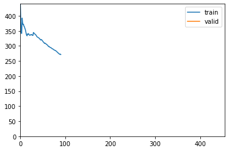
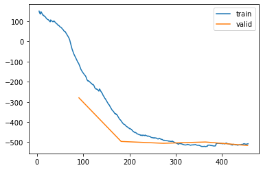

%load_ext autoreload
%autoreload 2from meteo_imp.kalman.fastai import *
from meteo_imp.kalman.filter import *
from meteo_imp.utils import *
from meteo_imp.data import *
from fastai.tabular.learner import *
from fastai.learner import *
from fastai.callback.all import *
import pandas as pd
import torch
import numpy as np@cache_disk("full_hai")
def load_data():
return read_fluxnet_csv(hai_path, None, num_dtype=np.float64)
hai = load_data()model = KalmanFilter(**KalmanFilterTester(dtype=torch.float64).params)dls = make_dataloader(hai, 200, 10, bs=10) len(hai) / 200 / 10 * .891.1808len(dls.train)91learn = Learner(dls, model, loss_func=imp_ll_loss, cbs=[ShowGraphCallback, Float64Callback])posdef_log = pd.DataFrame()len(dls.train)91learn.fit(5, 1e-3)
20.00% [1/5 03:15<13:03]
| epoch | train_loss | valid_loss | time |
|---|---|---|---|
| 0 | 271.520430 | 224.521947 | 03:15 |
20.88% [19/91 00:38<02:24 254.0046]

learn.recorder.plot_loss()
# learn.fit(10, 1e-2)# learn.recorder.plot_loss()# torch.save(learn.model, "trained_model_20_dec_f64.pickle")trained_state = learn.model.state_dict()display_as_row(learn.model.get_info())A
| latent | z_0 | z_1 | z_2 |
|---|---|---|---|
| z_0 | 0.8506 | -0.2218 | 0.2386 |
| z_1 | -0.2831 | 0.6903 | 0.3596 |
| z_2 | 0.5140 | 0.5848 | 0.1917 |
H
| z_0 | z_1 | z_2 |
|---|---|---|
| 0.3026 | 0.2306 | 0.1578 |
| -0.2170 | 0.4882 | 0.6614 |
| -0.0105 | 0.2026 | 0.2257 |
R
| 0 | 1 | 2 |
|---|---|---|
| 0.4186 | 0.1847 | 0.6362 |
| 0.1847 | 0.1272 | 0.2375 |
| 0.6362 | 0.2375 | 1.0077 |
Q
| latent | z_0 | z_1 | z_2 |
|---|---|---|---|
| z_0 | 0.0460 | -0.0622 | 0.0066 |
| z_1 | -0.0622 | 0.1427 | 0.0370 |
| z_2 | 0.0066 | 0.0370 | 0.0396 |
Results
from meteo_imp.data_preparation import MeteoDataTest
from meteo_imp.kalman.imputation import KalmanImputationdef gap2res(var_sel, gap_len, gap_start, block_start=1000, block_end=1200):
data = MeteoDataTest(hai.iloc[block_start:block_end, :]).add_gap(gap_len, var_sel, gap_start)
imp = KalmanImputation(data.data)
imp.model.filter.load_state_dict(trained_state)
return imp.to_result(data.data_compl_tidy, var_names= data.data.columns, units=units, pred_all=True)data = MeteoDataTest(hai)var_sel = data.data.columns%time gap2res(var_sel, 10, 10)ValueError: Not positive semi definite tensor([[0.4186, 0.1847, 0.6362],
[0.1847, 0.1272, 0.2375],
[0.6362, 0.2375, 1.0077]])gaps = [2, 5, 7, 10, 20, 30, 50, 100]
gap_starts = [0, 30, 60, 90]from ipywidgets import interact_manual, IntSlider